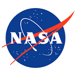
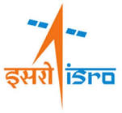

NASA

NASA formerly called as the National Advisory Committee for Aeronautics (NACA) was established in 1958. Most of the American space exploration programs were led by NASA inlcuding the
Gemini Missions, the Apollo Missions, the Skylab and the Space Shuttle program. NASA is currently developing the Space Launch System, commeercial crew vehicles and Orion Spacecraft.
NASA's research also involves studying deep space through telescopes, better understanding Earth's climate, advancing heliophysics and explloring celestial bodies through advanced
robotic spacecrafts.
ROSCOSMOS
The Roscosmos State Corporation for Space Activities, also known as ROSCOSMOS is responsible for cosmonautics programs, space flights and aerospace research for the Russina Federation.
It is derived from the Soviet Space Program established in the 1930s. Its launch facilities contains the famous Baikonur Cosmodrome in Kazakhstan which is the busiest space port on the planet.
The legacy of Roscosmos, considering the Soveiet Space Program, includes the first satellite, the first human spaceflight and the first space station. It is also assisting its inernational partners
in the International Space Station Program.
European Space Agency
The European Space Agency (ESA) was founded in 1975 and headquarted in Paris. It is a inergovernmental body with 22 member nations. Its spaceflight program includes assiting its international partners
in operating and maintaining the international Space Station and launhing and operation of space exploration programs (without crew) to other planets and our moon.
It is also responsible in operating and maintaining a major space port called the Guiana Space Centre located in the French Guiana. Arianne 5 is ESA's main launch vehicle.
ISRO

The Indian Space Research Organisation is establised in 1969 under the insistence of Dr. Vikram Sarabhai on recognising the need for Space Research in India. It is one among the six government space agencies
across the world that can deploy cryogenic engines, launch and operate huge fleets of satellites, launch interplanetary missions and has total launch capabilities. India's first satellite, Aryabhatta, was made
by ISRO and was launched by the Soviet Union in 1975. The Polar Satellite Lauch Vehicle (PSLV) is ISRO's main rocket. Some of the famous missions of ISRO include Chandrayaan 1, Chandrayaan 2 and the Mars Orbiter
Mission (MOM) also known as Mangalyaan.